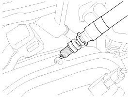
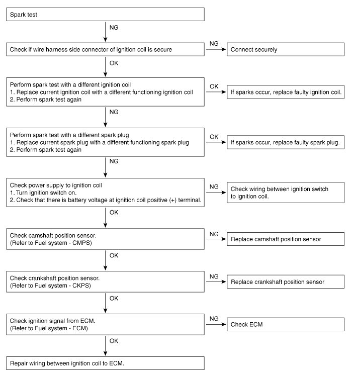

Component Tests and General Diagnostics
On-vehicle Inspection
Inspect ignition coil assembly and Perform spark test
1. Check for DTCs.
NOTE:
- If a DTC is present, perform troubleshooting in accordance with the procedure for that DTC.
2. Check if sparks occur.
(1) Remove the engine cover.
(2) Remove the cylinder head center cover.
(3) Remove the ignition coils.
(4) Using a spark plug wrench, remove the spark plugs.
(5) Disconnect the 4 injector connectors.
(6) Ground the spark plug to the engine.

(7) Check if sparks occur at each spark plug while engine is being cranked.
NOTE:
- Do not crank the engine for more then 5 seconds.
3. If sparks do not occur, perform the following test.

4. Using a spark plug wrench, install spark plugs.
5. Install the ignition coils.
6. Install the cylinder head center cover and the engine cover.